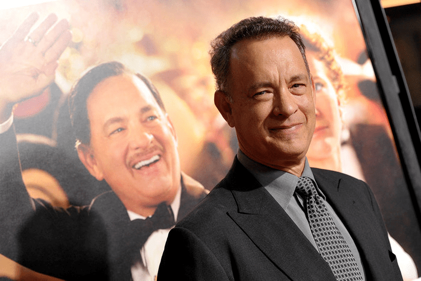
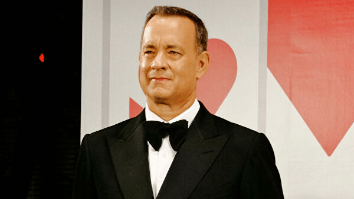

Киномонстр
Кино - наша страсть
Актер Том Хенкс поделился впечатлением о фестивале
Фильм Мариэль Хеллер "Прекрасный день по соседству" c Томом Хэнксом в роли телеведущего мистера Роджерса с восторгом приняли зрители кинофестиваля в Торонто, сообщает IndieWire. Так, критик издания написал, что режиссеру удалось добавить "интересных и хорошо продуманных деталей в материал, который мог бы стать банально сентиментальным". Другой эксперт назвал картину "кинематографической терапией", "лучшим фильмом года", а Хэнкса - кандидатом на премию "Оскар". В основе ленты - реальная история. Журналист Ллойд Вогель (Мэттью Риз) получает задание от издания написать материал про ведущего детской передачи Фреда Роджерса (Том Хэнкс) и не испытывает по этому поводу никакого энтузиазма, но оптимизм и доброта телеведущего постепенно меняют его отношение к жизни. Сам Хэнкс похвалил "искренность" и "мягкость" своего персонажа, пишет Hollywood Reporter.
 